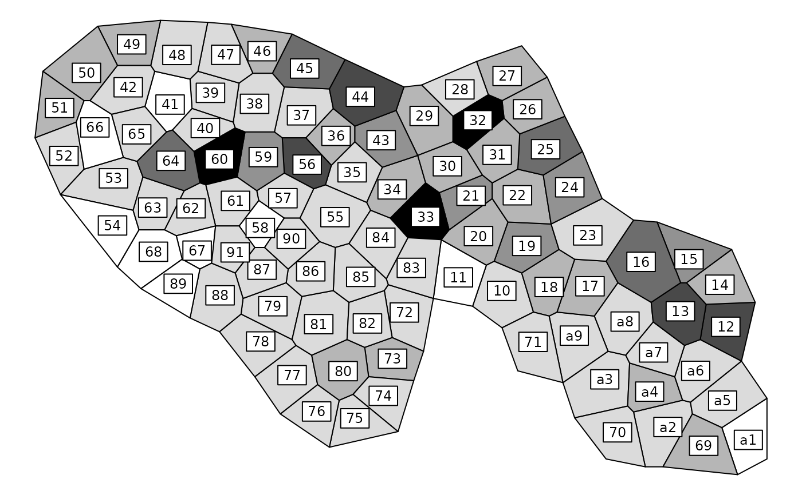

Bird species distribution
avijons.RdThis data set contains information about spatial distribution of bird species in a zone surrounding the river Rhône near Lyon (France).
Usage
data(avijons)Format
avijons is a list with the following components:
- xy
a data frame with the coordinates of the sites
- area
an object of class
area- fau
a data frame with the abundance of 64 bird species in 91 sites
- spe.names.fr
a vector of strings of character with the species names in french
- Spatial
an object of the class
SpatialPolygonsofsp, containing the map
Source
Bournaud, M., Amoros, C., Chessel, D., Coulet, M., Doledec, S., Michelot, J.L., Pautou, G., Rostan, J.C., Tachet, H. and Thioulouse, J. (1990). Peuplements d'oiseaux et propriétés des écocomplexes de la plaine du Rhône : descripteurs de fonctionnement global et gestion des berges. Rapport programme S.R.E.T.I.E., Ministère de l'Environnement CORA et URA CNRS 367, Univ. Lyon I.
References
Thioulouse, J., Chessel, D. and Champely, S. (1995) Multivariate analysis of spatial patterns: a unified approach to local and global structures. Environmental and Ecological Statistics, 2, 1–14.
See a data description at http://pbil.univ-lyon1.fr/R/pdf/pps051.pdf (in French).
Examples
data(avijons)
w1 <- dudi.coa(avijons$fau, scannf = FALSE)$li
area.plot(avijons$area, center = avijons$xy, val = w1[, 1], clab = 0.75,
sub = "CA Axis 1", csub = 3)

if (FALSE) { # \dontrun{
data(avijons)
if(!adegraphicsLoaded()) {
if(requireNamespace("pixmap", quietly = TRUE)) {
pnm.eau <- pixmap::read.pnm(system.file("pictures/avijonseau.pnm", package = "ade4"))
pnm.rou <- pixmap::read.pnm(system.file("pictures/avijonsrou.pnm", package = "ade4"))
pnm.veg <- pixmap::read.pnm(system.file("pictures/avijonsveg.pnm", package = "ade4"))
pnm.vil <- pixmap::read.pnm(system.file("pictures/avijonsvil.pnm", package = "ade4"))
jons.coa <- dudi.coa(avijons$fau, scan = FALSE, nf = 4)
par(mfcol = c(3, 2))
s.value(avijons$xy, jons.coa$li[, 1], pixmap = pnm.rou, inclu = FALSE,
grid = FALSE, addax = FALSE, cleg = 0, sub = "F1+ROADS", csub = 3)
s.value(avijons$xy, jons.coa$li[, 1], pixmap = pnm.veg, inclu = FALSE,
grid = FALSE, addax = FALSE, cleg = 0, sub = "F1+TREES", csub = 3)
s.value(avijons$xy, jons.coa$li[, 1], pixmap = pnm.eau, inclu = FALSE,
grid = FALSE, addax = FALSE, cleg = 0, sub = "F1+WATER", csub = 3)
s.value(avijons$xy, jons.coa$li[, 2], pixmap = pnm.rou, inclu = FALSE,
grid = FALSE, addax = FALSE, cleg = 0, sub = "F2+ROADS", csub = 3)
s.value(avijons$xy, jons.coa$li[, 2], pixmap = pnm.veg, inclu = FALSE,
grid = FALSE, addax = FALSE, cleg = 0, sub = "F2+TREES", csub = 3)
s.value(avijons$xy, jons.coa$li[, 2], pixmap = pnm.eau, inclu = FALSE,
grid = FALSE, addax = FALSE, cleg = 0, sub = "F2+WATER", csub = 3)
par(mfrow = c(1, 1))
}
if(requireNamespace("spdep", quietly = TRUE) &
requireNamespace("pixmap", quietly = TRUE) &
requireNamespace("adespatial", quietly = TRUE)) {
link1 <- area2link(avijons$area)
lw1 <- apply(link1, 1, function(x) x[x > 0])
neig1 <- neig(mat01 = 1*(link1 > 0))
nb1 <- neig2nb(neig1)
listw1 <- spdep::nb2listw(nb1,lw1)
jons.ms <- adespatial::multispati(jons.coa, listw1, scan = FALSE, nfp = 3, nfn = 2)
summary(jons.ms)
par(mfrow = c(2, 2))
barplot(jons.coa$eig)
barplot(jons.ms$eig)
s.corcircle(jons.ms$as)
plot(jons.coa$li[, 1], jons.ms$li[, 1])
par(mfrow = c(1, 1))
par(mfcol = c(3, 2))
s.value(avijons$xy, jons.ms$li[, 1], pixmap = pnm.rou, inclu = FALSE,
grid = FALSE, addax = FALSE, cleg = 0, sub = "F1+ROADS", csub = 3)
s.value(avijons$xy, jons.ms$li[, 1], pixmap = pnm.veg, inclu = FALSE,
grid = FALSE, addax = FALSE, cleg = 0, sub = "F1+TREES", csub = 3)
s.value(avijons$xy, jons.ms$li[, 1], pixmap = pnm.eau, inclu = FALSE,
grid = FALSE, addax = FALSE, cleg = 0, sub = "F1+WATER", csub = 3)
s.value(avijons$xy, jons.ms$li[, 2], pixmap = pnm.rou, inclu = FALSE,
grid = FALSE, addax = FALSE, cleg = 0, sub = "F2+ROADS", csub = 3)
s.value(avijons$xy, jons.ms$li[, 2], pixmap = pnm.veg, inclu = FALSE,
grid = FALSE, addax = FALSE, cleg = 0, sub = "F2+TREES", csub = 3)
s.value(avijons$xy, jons.ms$li[, 2], pixmap = pnm.eau, inclu = FALSE,
grid = FALSE, addax = FALSE, cleg = 0, sub = "F2+WATER", csub = 3)
par(mfrow = c(1, 1))
}}} # }